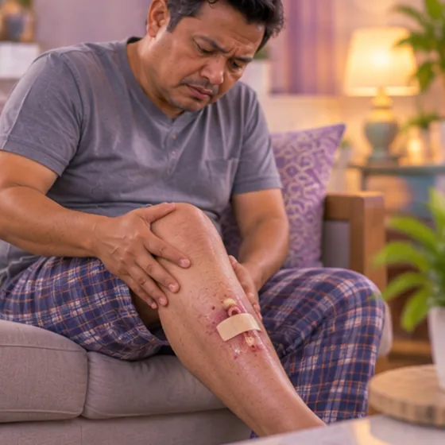
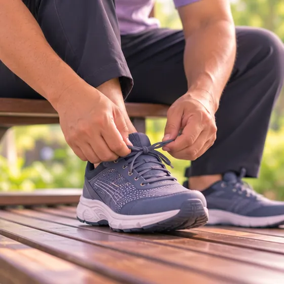

Arteriosklerosis obliterans (arteri tersumbat)
Penyempitan dan penyumbatan arteri di kaki, yang mengurangkan aliran darah ke kaki
Apa itu
Timbunan lemak perlahan-lahan menyempitkan arteri yang membawa darah ke kaki, jadi kaki mungkin tidak mendapat cukup darah, terutamanya ketika berjalan.
- Kaki dan tapak kaki
- Warga emas, perokok
- Betis sakit ketika berjalan
- Jumpa doktor
- Doktor keluarga, pakar bedah vaskular atau doktor jantung
- Biasa pada
- Warga emas; perokok atau orang yang ada diabetes atau tekanan darah tinggi
- Berjangkit
- Tidak
- Perjalanan
- Biasanya perlahan selama bertahun-tahun; doktor boleh menerangkan cara melindungi kaki anda
Tanda biasa

Sukar berjalan jauhDaya berjalan berkurang 
Kejang di betisKekejangan otot 
Tangan dan kaki sejukHujung anggota sejuk 
Luka lambat sembuhLuka lambat sembuh Kaki kebas dan kesemutanNeuropati periferi
Mengapa ia berlaku

MerokokPenggunaan tembakau 
Gula atau tekanan darah tinggiFaktor risiko metabolik 
Peningkatan usiaPenuaan
Punca lain
- Timbunan lemak di dalam arteri (pengerasan arteri)
Jumpa doktor dahulu jika
- Kaki tiba-tiba pucat, sejuk, sangat sakit atau kebas: ke hospital segera
- Sakit dada, sukar bernafas, atau muka senget dan lengan lemah: hubungi 999
- Luka pada kaki atau jari kaki yang tidak sembuh
- Jari kaki atau kulit bertukar gelap, biru atau hitam
- Sakit pada kaki ketika berehat, terutamanya pada waktu malam
Jika mana-mana berkenaan, sila jumpa doktor sebelum sesi.
Halaman ini ialah maklumat am. Sila terus mengambil ubat biasa anda dan terus berjumpa doktor.
Teruskan mengambil ubat biasa anda dan terus berjumpa doktor. Sesi kami ialah sokongan lembut dan tidak menggantikan rawatan perubatan.
Menjaga diri

Berhenti merokokBerhenti merokok 
Pakai kasut selesa dan menyokongKasut sokongan 
Periksa tekanan darah di rumahPemantauan tekanan darah di rumah 
Ambil ubat seperti disuruh doktorPematuhan ubat
Lebih banyak cara menjaga diri
- Berjalan secara tetap seperti nasihat doktor, berehat apabila sakit datang
Beritahu ahli terapi anda
- Darah beku atau kaki bengkak yang baru
- Kaki kebas atau kesemutan
- Diabetes atau deria kulit berkurang
- Penyakit jantung
- Tekanan darah tinggi
- Kulit luka, merah atau sakit
Ahli terapi anda akan menyemaknya bersama anda sebelum bermula.
Soalan dan jawapan
Apakah Arteriosklerosis obliterans (arteri tersumbat)?
Penyempitan dan penyumbatan arteri di kaki, yang mengurangkan aliran darah ke kaki. Timbunan lemak perlahan-lahan menyempitkan arteri yang membawa darah ke kaki, jadi kaki mungkin tidak mendapat cukup darah, terutamanya ketika berjalan.
Apakah tanda biasa Arteriosklerosis obliterans (arteri tersumbat)?
Sukar berjalan jauh · Kejang di betis · Tangan dan kaki sejuk · Luka lambat sembuh · Kaki kebas dan kesemutan
Mengapa Arteriosklerosis obliterans (arteri tersumbat) berlaku?
Merokok · Gula atau tekanan darah tinggi · Peningkatan usia
Bagaimana menjaga diri dengan Arteriosklerosis obliterans (arteri tersumbat)?
Berhenti merokok · Pakai kasut selesa dan menyokong · Periksa tekanan darah di rumah · Ambil ubat seperti disuruh doktor
Bolehkah sesi AI Body Master membantu Arteriosklerosis obliterans (arteri tersumbat)?
Sesi ialah sokongan meridian tanpa jarum yang lembut untuk kesejahteraan anda. Ia tidak merawat atau menyembuhkan Arteriosklerosis obliterans (arteri tersumbat) dan tidak menggantikan ubat atau doktor anda. Beritahu ahli terapi anda sebelum sesi bermula.
Keadaan berkaitan
- Angina varian (angina Prinzmetal)
- Miokarditis virus (radang otot jantung)
- Sindrom sinus sakit
- Blok berkas cabang kanan tidak lengkap
- Angina tidak stabil
- Urat varikos pada kaki (vena safena besar)
- Tekanan darah rendah
- Fistula arteriovenus (fistula AV)
- Batuk kokol (pertusis)
- Pneumonia virus (radang paru-paru)
- Pneumokoniosis (penyakit paru-paru akibat habuk)
- Tuberkulosis paru-paru lama (TB telah sembuh)
Rujukan: General information based on public health sources such as Mayo Clinic, NHS, Cleveland Clinic and NCBI StatPearls.
Halaman dikemas kini: 2026-11-01